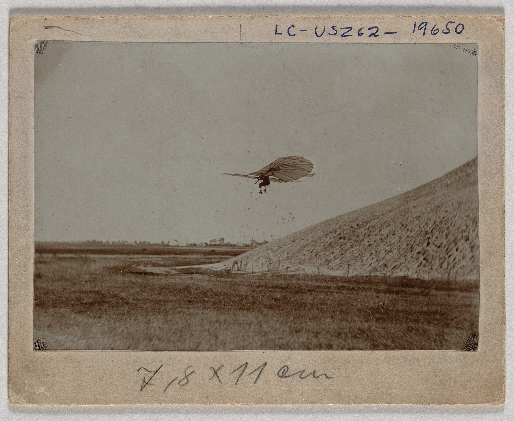
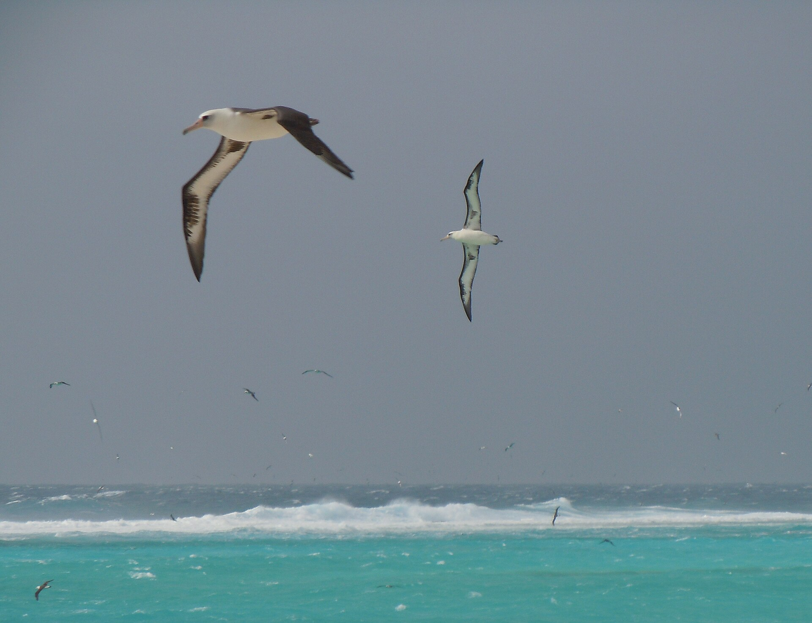
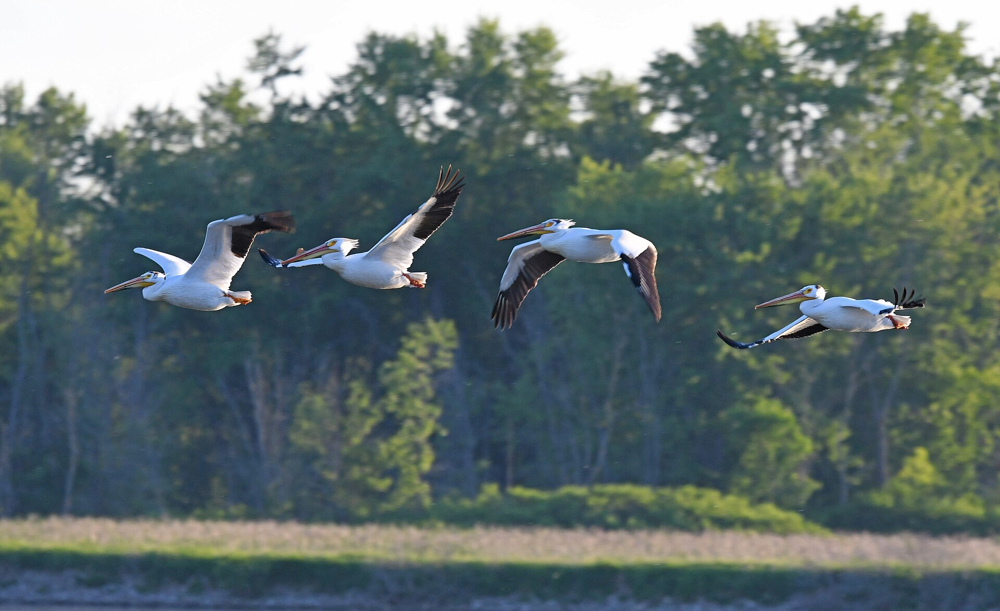

[하늘길, 번외편1] 릴리엔탈 날갯짓 기계 시험 부진, 사람 먼저 띄운 고정익 글라이더
새 대흉근 체중 8~11%, 꿀벌 초당 230회 날갯짓
1799년 케일리 고정익 구상, 날갯짓 연구 침체
오르니토프터 기네스 2시간 34분, 2026년 256분 보도
AI경제저널=김갑봉 기자 | 1890년대 중반 독일 항공 개척자 오토 릴리엔탈이 글라이더를 타고 떠올랐다. 그가 사람을 띄운 기체는 날개를 고정한 글라이더였다. 날갯짓 장치를 단 기체도 만들어 시험했지만 결과가 좋지 않았다(오토 릴리엔탈 박물관).
베이항대학(Beihang University)은 2022년 보도자료에서 날갯짓 비행이 어려운 까닭을 짚었다. 기구가 복잡하고 기계 장치 요구 수준이 높다는 것이다. 인공 날갯짓으로 비행을 이루기 어렵다는 설명이다(베이항대).
1891년 릴리엔탈, 글라이더 2000번과 날갯짓 기계 시험
릴리엔탈은 1889년 『조류 비행을 항공의 기초로』(Der Vogelflug als Grundlage der Fliegekunst)를 펴냈다. 1891년부터 1896년까지 약 2000번 날았다. 1896년 8월 9일 추락해 이튿날 숨졌다(브리태니커).
오토 릴리엔탈 박물관에 따르면 1891년 데르비츠 글라이더가 세계 첫 유인 글라이더 비행에 성공했다. 날개폭은 약 23피트(약 7m), 무게는 18kg이었다. 최대 약 80피트(약 24m)를 날았다(오토 릴리엔탈 박물관).
릴리엔탈은 이 글라이더에 날갯짓 장치를 달려 했다. 사람 힘과 엔진 힘을 모두 구상했다. 1893~96년 작은 날갯짓 기계 시험 결과는 처음에 좋지 않았지만 그는 시도를 이어갔다(오토 릴리엔탈 박물관).

대흉근 체중 8~11%, 꿀벌 초당 230회
비웨너(Biewener)는 2011년 논문에서 날개를 내리치는 대흉근(pectoralis)이 체중의 약 8~11%라고 정리했다. 날개를 들어 올리는 근육(supracoracoideus)은 체중의 약 2%다(Biewener, 2011).
알트슐러(Altshuler) 연구팀은 2005년 논문에서 지금까지 조사한 곤충은 진폭이 크게 날갯짓한다고 설명했다. 힘 대부분은 날갯짓 한 번의 중간 시점에 나온다. 꿀벌은 진폭 약 90도, 초당 약 230회로 정지비행을 한다(Altshuler 외, 2005).
1799년 케일리, 고정익 구상과 날갯짓 침체
미국항공우주국(NASA) 연표는 1799년부터 1850년대 항목에 조지 케일리를 올렸다. 케일리는 『공중항행에 관하여(On Aerial Navigation)』에서 날개를 고정하고 추진장치와 꼬리날개를 단 항공기가 최선이라고 밝혔다(NASA 글렌연구센터).
베이항대는 케일리가 19세기 초 고정익 항공기 원형을 발명했다고 적었다. 라이트 형제가 첫 유인 동력비행에 성공하자 고정익과 헬리콥터가 주류가 됐다. 날갯짓 탐구는 오랫동안 잠잠했다(베이항대).
알바트로스 에너지 80~90%, 바람이 낸 힘
우즈홀해양연구소(WHOI) 필립 리처드슨(Philip L. Richardson)은 2011년 논문에서 알바트로스 활공을 설명했다. 윈드시어(wind shear, 높이별 바람 세기 차이)를 쓰는 동적 활공이 에너지 80~90%를 맡고 나머지는 상승기류가 낸다(우즈홀해양연구소).
알바트로스는 파도 골에서 올라오며 점점 빠른 바람을 만나 10~15m까지 오른다. 리처드슨은 모델로 계산해 바람을 거슬러 갈 때 범선처럼 약 30도로 방향을 바꾼다고 설명했다. 활공 최소 풍속은 약 7노트(시속 약 13km)로 추정했다(우즈홀해양연구소).

2014년 따오기와 2001년 펠리컨, V자 대형 비행
스티븐 포르투갈(Steven J. Portugal) 연구진은 2014년 논문에서 북방대머리따오기가 V자 대형에서 이론이 예측한 최적 위치를 잡는다고 밝혔다. 날개 끝 궤적을 맞춰 위상을 같게 날갯짓하는 모습도 확인했다(Portugal 외, 2014).
2001년 『네이처』 논문 연구진은 V자 대형으로 날도록 훈련한 큰흰펠리컨의 심박수를 쟀다. V자 대형이 에너지를 상당히 아끼게 한다고 밝혔다(Weimerskirch 외, 2001).

스노버드 19.3초 145m, 오르니토프터 256분 보도
사람 힘으로 날개를 퍼덕이는 비행은 2010년 현실이 됐다. 스노버드(Snowbird)는 날개폭 32m, 무게 42kg이다. 19.3초 동안 145m를 날았고 국제항공연맹(FAI)이 세계 신기록으로 인증했다(토론토대학).
무인 오르니토프터(ornithopter, 날갯짓 비행기) 비행시간은 빠르게 늘었다. 베이항대는 2022년 7월 21일 1시간 31분 4.98초를 날아 기네스 기록을 세웠다. 기네스 부문이 비어 있던 까닭은 기존 비행이 대부분 30분 안팎에 그쳤기 때문이다(베이항대).
서북공업대학 기체는 같은 해 11월 15일 2시간 34분 38.62초로 기네스 세계기록에 올랐다. 베이항대 7월 기록보다 1시간 3분 33.64초 긴 것이다(기네스 세계기록).
서북공업대학은 2023년 기체 신거(Xinge)가 날개폭 70cm, 무게 260g으로 3시간 5분 30초 연속 비행했다고 밝혔다. 2026년 3월에는 베이징과학기술대학 시제품이 최대 256분 비행한다는 보도가 나왔다(CGTN).
기네스 세계기록 누리집은 2026년 11월 4일 현재 2022년 서북공업대학 기록을 싣고 있다. 베이항대는 날갯짓 비행기가 화성 탐사와 공항 조류 퇴치에 쓰일 수 있다고 적었다(기네스 세계기록·베이항대).
나노 허밍버드 19g, 날개폭 6.5인치
나노 허밍버드(Nano Hummingbird)는 미국 국방고등연구계획국(DARPA) 지원으로 에어로바이런먼트(AeroVironment)가 만든 시제품이다. 날개폭 6.5인치(약 16.5cm), 무게 19g이며 2011년 2월 17일 공개됐다(로스앤젤레스타임스).
원격 조종으로 약 8분 정지비행을 했다. 에어로바이런먼트 누리집은 2011년 2월 20일 보존본에서 11분 지속 비행 영상을 소개했다(로스앤젤레스타임스·에어로바이런먼트).
참고문헌
- A. A. Biewener, "Muscle function in avian flight: achieving power and control", 『Philosophical Transactions of the Royal Society B』 366권 1570호, 2011년, 1496~1506쪽. https://doi.org/10.1098/rstb.2010.0353
- Douglas L. Altshuler 외, "Short-amplitude high-frequency wing strokes determine the aerodynamics of honeybee flight", 『PNAS』 102권 50호, 2005년, 18213~18218쪽. https://doi.org/10.1073/pnas.0506590102
- Steven J. Portugal 외, "Upwash exploitation and downwash avoidance by flap phasing in ibis formation flight", 『Nature』 505권, 2014년, 399~402쪽. https://doi.org/10.1038/nature12939
- Henri Weimerskirch 외, "Energy saving in flight formation", 『Nature』 413권, 2001년, 697~698쪽. https://doi.org/10.1038/35099670
- Philip L. Richardson, "How do albatrosses fly around the world without flapping their wings?", 『Progress in Oceanography』 88권, 2011년, 46~58쪽. https://doi.org/10.1016/j.pocean.2010.08.001
- 오토 릴리엔탈 박물관(Otto-Lilienthal-Museum Anklam), "The Aeroplane Models of Lilienthal", 2026년 11월 4일 열람. https://www.lilienthal-museum.de/olma/e213.htm
- 미국항공우주국(NASA) 글렌연구센터, "History of Flight", 2026년 11월 4일 열람. https://www.grc.nasa.gov/www/k-12/UEET/StudentSite/historyofflight.html
- 베이항대학(Beihang University), "Beihang-developed unmanned ornithopter sets Guinness record for longest flight duration", 2026년 11월 4일 열람. https://ev.buaa.edu.cn/info/1022/2824.htm
- 기네스 세계기록(Guinness World Records), "Longest flight duration of an unmanned ornithopter (single charge)", 서북공업대학, 2022년 11월 15일. https://www.guinnessworldrecords.com/world-records/678511-longest-flight-duration-of-an-unmanned-ornithopter-single-charge
- 우즈홀해양연구소(WHOI), "On the Sizeable Wings of Albatrosses", 2011년 3월 16일. https://www.whoi.edu/press-room/news-release/on-the-sizeable-wings-of-albatrosses/
- 토론토대학 공학대학, "International Aviation Body Confirms Human-powered Ornithopter Achievement". https://news.engineering.utoronto.ca/international-aviation-body-confirms-human-powered-ornithopter-achievement/
- 에어로바이런먼트(AeroVironment), "Nano Air Vehicle (NAV)", 2011년 2월 20일 인터넷아카이브 보존본. https://web.archive.org/web/20110220155121/http://www.avinc.com/nano
- W. J. Hennigan, "It's a bird! It's a spy! It's both", 『Los Angeles Times』, 2011년 2월 17일. https://www.latimes.com/archives/la-xpm-2011-feb-17-la-fi-hummingbird-drone-20110217-story.html
- CGTN, "China's bird-like drone breaks world record flight time", 2023년 10월 9일. https://news.cgtn.com/news/2023-10-09/China-s-bird-like-drone-breaks-world-record-flight-time-1nLyKR8fa3S/index.html
- CGTN, "Chinese eagle-like flapping-wing drone can fly for over 4 hours", 2026년 3월 22일. https://news.cgtn.com/news/2026-03-22/Chinese-eagle-like-flapping-wing-drone-can-fly-for-over-4-hours-1LIQPPc8ZCU/p.html
- 브리태니커(Encyclopaedia Britannica), "Otto Lilienthal", 2026년 11월 4일 열람. https://www.britannica.com/biography/Otto-Lilienthal
[사진 출처]
- [사진1] 미국 의회도서관 소장 "Otto Lilienthal gliding experiment"(LCCN 2002722087), 1890년대 중반, 위키미디어 공용, 퍼블릭 도메인. https://commons.wikimedia.org/wiki/File:Otto_Lilienthal_gliding_experiment_LCCN2002722087.jpg
- [사진2] 촬영 Noah Kahn/미국 어류야생동물관리국(USFWS), "Laysan albatross in flight, Sand Island", 미드웨이환초 국립야생동물보호구역, 2012년 3월 3일, 위키미디어 공용, 퍼블릭 도메인. https://commons.wikimedia.org/wiki/File:Laysan_albatross_in_flight,_Sand_Island_(7123153063).jpg
- [사진3] 촬영 Jim Hudgins/미국 어류야생동물관리국(USFWS) 중서부지역본부, "American white pelicans in flight", 2024년 5월 25일, 위키미디어 공용, 퍼블릭 도메인. https://commons.wikimedia.org/wiki/File:American_white_pelicans_in_flight_(53757664450).jpg